Click Launch Instance.
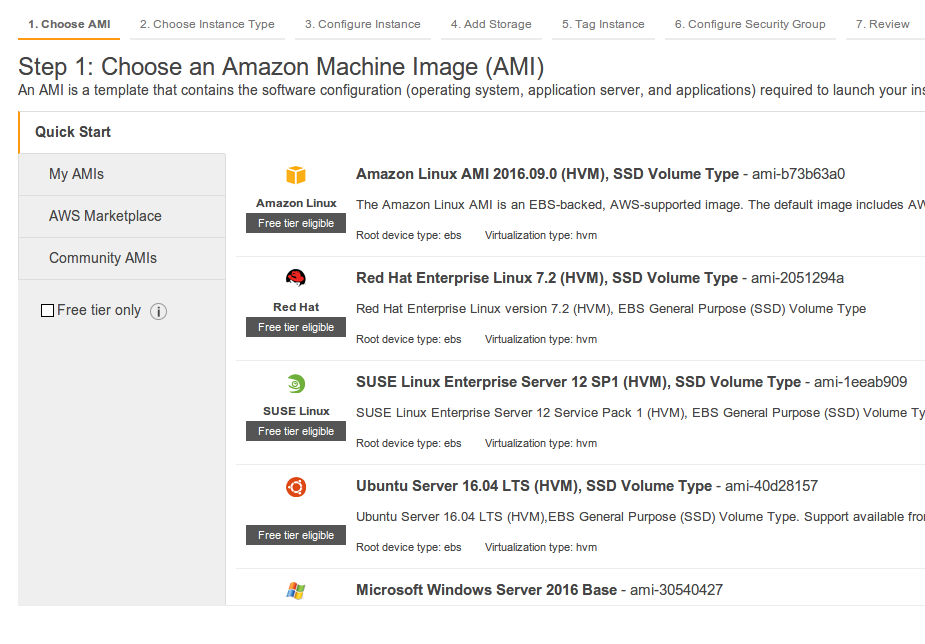
Select Community AMIs. Check Red Hat checkbox.

Then click Select.

Choose t2.large and click Next: Configure Instance Details.

If you don't have any network (VPC) please create it. Please create subnet as well, if there is no any subnet in the list.
Please change Auto-assign Public IP to Enable.

Click Next: Add Storage.
Input into the field Size (GiB) value 25. Click Next: Tag Instance.

Just click Next: Configure Security Group.
Select All traffic from select-box Type and click Review and Launch.

Click Launch!

Select "Create a new key pair" and input key pair name (e.g. cloudera), then click Download Key Pair and save the file. After that the Launch Instances button will become enabled. Click it.
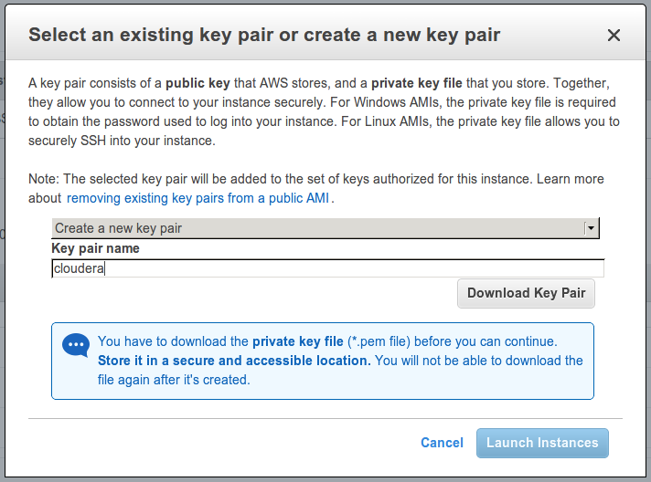
Here you can see launch status. Click on View Instances.

Here we can see the list of launched instances.
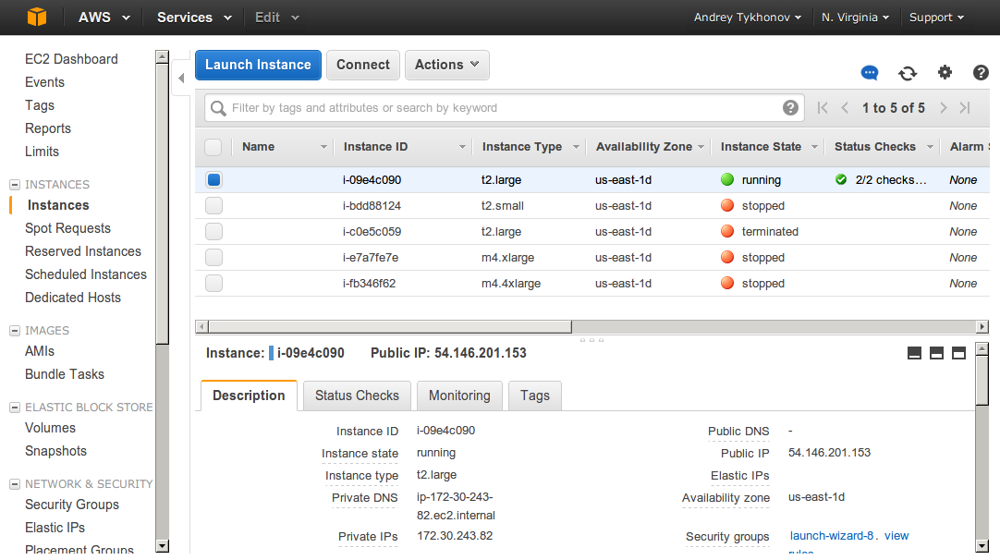
Before connection to the instance, please change permissions for the recently downloaded cloudera.pem file:
chmod 600 cloudera.pem
On top of the list you can see the running instance. The one which has been recently created.
From the bottom panel take Public IP of the instance and put it to /etc/hosts (please, don't do it in this way if you did it once for master.cloudera. Edit /etc/hosts using any text editor instead and modify existing record):
``` sudo -s
echo "54.146.201.153 master.cloudera" >> /etc/hosts ```
Then, on the local machine execute the following in order to connect to master instance:
ssh -i cloudera.pem ec2-user@master.cloudera
Please specify the full path to the cloudera.pem if it is not located in the current directory. You might be asked: Are you sure you want to continue connecting (yes/no)?. Say: yes!
As the result you should get the shell:

Welcome, you're on master instance!
In order to launch slave, you could perform the same steps as for master, except the following:
1) Select t2.small instance type.
2) You don't need to create a network or subnet (select existing one).
3) Please, don't forget to change Auto-assign Public IP to Enable.
4) Select an existing key pair (e.g. cloudera.pm).
Take the Public IP of slave instance and put it to /etc/hosts (please, don't do it in this way if you did it once for slave.cloudera. Edit /etc/hosts using any text editor instead and modify existing record):
``` sudo -s
echo "107.22.45.103 slave.cloudera" >> /etc/hosts ```
Try to connect to it:
ssh -i cloudera.pem ec2-user@slave.cloudera
Welcome, you're on slave instance!
First of all let's get private IPs of the instances. Go to master instance:
ssh -i cloudera.pem ec2-user@master.cloudera
And execute there ifconfig:
ifconfig
You should get the following in response:
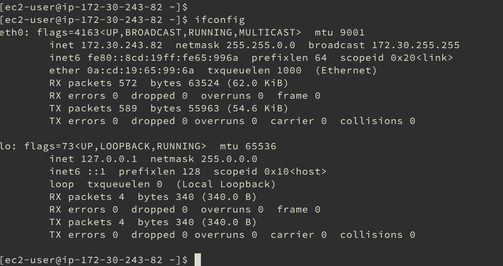
The private IP in my case is 172.30.243.82. Remember it or better write it down :)
Please perform the same for slave instance and write down its private IP.
In my case it equals to 172.30.169.105.
Connect to master instance:
ssh -i cloudera.pem ec2-user@master.cloudera
In order to disable SELinux execute the following command:
sudo sed -i 's/SELINUX=enforcing/SELINUX=disabled/g;' /etc/sysconfig/selinux
Please check:
cat /etc/sysconfig/selinux
In the output you should see SELINUX=disabled.
Now, please executed the following command:
sudo sed -i 's/LANG=en_US.UTF-8/LANG=en_US.UTF-8 selinux=0/g;' /boot/grub2/grub.cfg
Please check:
sudo cat /boot/grub2/grub.cfg
Please check that there is selinux=0 in the end of line with /boot/vmlinuz-....
menuentry 'Red Hat Enterprise Linux Server (3.10.0-327.el7.x86_64) 7.2 (Maipo)' --class red --class gnu-linux --class gnu --class os --unrestricted $menuentry_id_option 'gnulinux-3.10.0-327.el7.x86_64-advanced-379de64d-ea11-4f5b-ae6a-0aa50ff7b24d' {
load_video
set gfxpayload=keep
insmod gzio
insmod part_gpt
insmod xfs
set root='hd0,gpt2'
if [ x$feature_platform_search_hint = xy ]; then
search --no-floppy --fs-uuid --set=root --hint='hd0,gpt2' 379de64d-ea11-4f5b-ae6a-0aa50ff7b24d
else
search --no-floppy --fs-uuid --set=root 379de64d-ea11-4f5b-ae6a-0aa50ff7b24d
fi
linux16 /boot/vmlinuz-3.10.0-327.el7.x86_64 root=UUID=379de64d-ea11-4f5b-ae6a-0aa50ff7b24d ro console=ttyS0,115200n8 console=tty0 net.ifnames=0 crashkernel=auto LANG=en_US.UTF-8 selinux=0
initrd16 /boot/initramfs-3.10.0-327.el7.x86_64.img
Now, please reboot your instance:
sudo reboot
After a while connect again to master instance and execute:
getenforce
You should receive in response:
Disabled
SELinux is successfully disabled!
Perform exactly the same steps for slave instance!
Connect to master instance:
ssh -i cloudera.pem ec2-user@master.cloudera
Execute the following commands:
``` sudo -s
echo "172.30.243.82 master.cloudera" >> /etc/hosts
echo "172.30.169.105 slave.cloudera" >> /etc/hosts
exit ```
172.30.243.82 - private IP of master instance.
172.30.169.105 - private IP of slave instance.
Check that the records are present:
cat /etc/hosts
You should get something like the following in output:
``` 127.0.0.1 localhost localhost.localdomain localhost4 localhost4.localdomain4 ::1 localhost localhost.localdomain localhost6 localhost6.localdomain6
172.30.243.82 master.cloudera 172.30.169.105 slave.cloudera ```
Now, please, execute the following command:
``` sudo -s
echo "master.cloudera" > /etc/hostname
echo "HOSTNAME=master.cloudera" >> /etc/sysconfig/network
echo "preserve_hostname: true" >> /etc/cloud/cloud.cfg
exit ```
Now reboot:
sudo reboot
Connect again and check:
hostname
The output should be master.cloudera.
hostname --fqdn
Here should be the same output: master.cloudera.
Our host name has been successfully changed!
Now, we will be configuring slave instance using mostly the same steps (but not the same, be careful) as for master.
Connect to slave:
ssh -i cloudera.pem ec2-user@slave.cloudera
Execute the following:
``` sudo -s
echo "172.30.243.82 master.cloudera" >> /etc/hosts
echo "172.30.169.105 slave.cloudera" >> /etc/hosts
exit ```
Check that the records are present:
cat /etc/hosts
You should get something like the following in output:
``` 127.0.0.1 localhost localhost.localdomain localhost4 localhost4.localdomain4 ::1 localhost localhost.localdomain localhost6 localhost6.localdomain6
172.30.243.82 master.cloudera 172.30.169.105 slave.cloudera ```
Now, please, execute the following command:
``` sudo -s
echo "slave.cloudera" > /etc/hostname
echo "HOSTNAME=slave.cloudera" >> /etc/sysconfig/network
echo "preserve_hostname: true" >> /etc/cloud/cloud.cfg
exit ```
Now reboot:
sudo reboot
Connect again and check:
hostname
The output should be slave.cloudera.
hostname --fqdn
Here should be the same output: slave.cloudera.
Our host name has been successfully changed!
Connect to master:
ssh -i cloudera.pem ec2-user@master.cloudera
Then download cloudera:
``` sudo yum install -y wget
wget http://archive.cloudera.com/cm5/installer/latest/cloudera-manager-installer.bin
chmod +x cloudera-manager-installer.bin
sudo ./cloudera-manager-installer.bin ```

Click Next, then Next, accept the license, click Next, accept the license again, and wait until it will be installed.
When installation is finished, the wizard prompts you to visit http://master.cloudera:7180/. Do it!
Open http://master.cloudera:7180/ and you'll get login page. Use username admin and password admin. (If you don't see login page, but "Unable to load page" instead, just wait for a while and try again).
Check Yes, I accept the End User License Terms and Conditions. and click Continue.
Click Continue.
Click Continue.

Enter private IP of master and click Search.

Master is selected, click Continue.
Click Continue.
Check Install Oracle Java SE Development Kit (JDK) and click Continue.
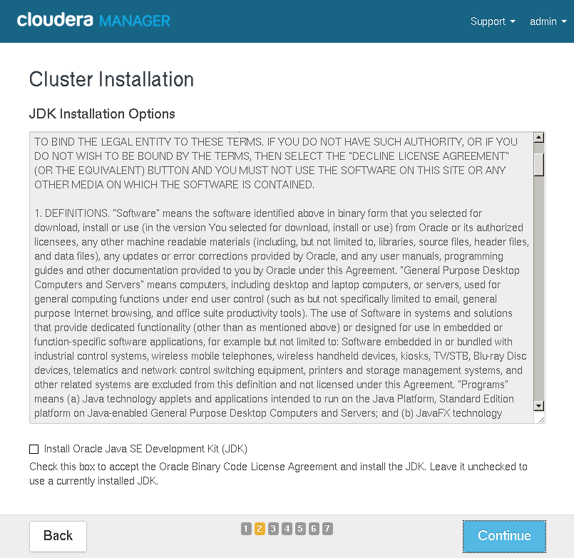
Click Continue.
Select Another user and input ec2-user. Then select Authentication Method equals to All hosts accept same private key, click on Choose File and open cloudera.pem file. Click Continue. You will be asked: Continue SSH login with no passphrase?. Say: Ok!
We need to wait for a while and click Continue.
Coffee time (~5m). After coffee break click Continue.
Most probably you'll see the same errors as could be seen on the screenshot:

So, in order to fix them execute the following (master instance):
``` sudo -s
sysctl vm.swappiness=10
echo never > /sys/kernel/mm/transparent_hugepage/defrag
echo never > /sys/kernel/mm/transparent_hugepage/enabled
exit ```
Click Run Again. The errors should be absent. Click Finish.
Select Custom Services, then HBase, HDFS, MapReduce and YARN. Click Continue.
Click Continue.
Click Test Connection then Continue.
Click Continue.
Pray!
Click Finish.
At this point several errors could be seen. There was another one with ZooKeeper which was fixed by means of restarting of ZooKeeper. Just click on the arrow and click Restart.

After a while all other errors disappeared except for HDFS.
Click on red exclamation sign.

Click Under-Replicated Blocks.
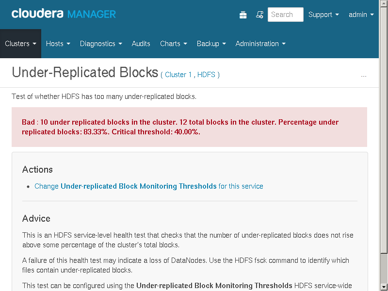
Click on Change Under-replicated Block Monitoring Thresholds for this service.
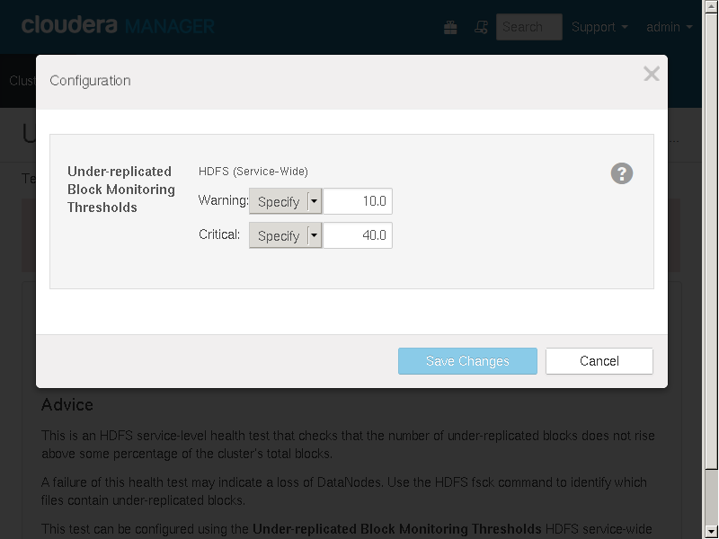
Input 90 into Critical input field and Save Changes.
Now, go to home page and see that instead of error we have the warning.
On the home page click HDFS link (Status section).
Click Configuration and input dfs.permissions.
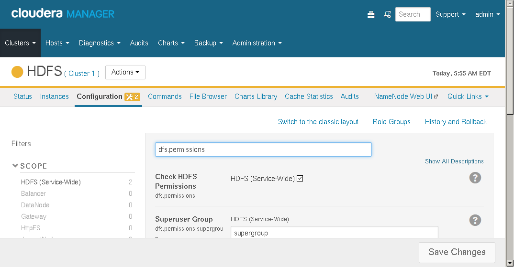
Uncheck HDFS (Service-Wide) and click Save Changes.

Near Actions button you'll see restart button. Click it.

Click Restart Stale Services.

Check Re-deploy client configuration and click Restart Now.
After a while the services will be restarted.

Click Finish.
On the home page click YARN (MR2 Included) link.
Go to Configuration page and input yarn.nodemanager.resource.memory-mb.

Input 2.5. Please make sure that GiB is selected. Click Save Changes.
Now, instead of yarn.nodemanager.resource.memory-mb please input yarn.scheduler.minimum-allocation-mb.

Input 750 and make sure that MiB is selected. Click Save Changes.

Near Actions button you can see two icons. Click on the second one (redeployment).
On the next screen click Restart Stale Services. And then click Restart Now.
After a while all services will be restarted. Click Finish.
Download test application wordcount-1.0-SNAPSHOT-jar-with-dependencies.jar and upload it to master by means of the following command:
scp -i cloudera.pem wordcount-1.0-SNAPSHOT-jar-with-dependencies.jar ec2-user@master.cloudera:/home/ec2-user/
Connect to master instance:
ssh -i cloudera.pem ec2-user@master.cloudera
Then execute the following commands:
``` sudo su hdfs
hadoop fs -mkdir /home /home/root
hadoop fs -chown root /home/root
exit
sudo -s
hadoop fs -mkdir /home/root/wordcount /home/root/wordcount/input
echo "Hadoop is an elephant" > file0
echo "Hadoop is as yellow as can be" > file1
echo "Oh what a yellow fellow is Hadoop" > file2
hadoop fs -put file* /home/root/wordcount/input
hadoop jar wordcount-1.0-SNAPSHOT-jar-with-dependencies.jar WordCount /home/root/wordcount/input /home/root/wordcount/output ```
The following output could be seen in response:
``` 16/11/02 06:19:31 INFO client.RMProxy: Connecting to ResourceManager at master.cloudera/172.30.191.118:8032 16/11/02 06:19:32 WARN mapreduce.JobResourceUploader: Hadoop command-line option parsing not performed. Implement the Tool interface and execute your application with ToolRunner to remedy this.
16/11/02 06:19:34 INFO input.FileInputFormat: Total input paths to process : 3 16/11/02 06:19:35 INFO mapreduce.JobSubmitter: number of splits:3 16/11/02 06:19:35 INFO mapreduce.JobSubmitter: Submitting tokens for job: job_1478081832568_0001 16/11/02 06:19:36 INFO impl.YarnClientImpl: Submitted application application_1478081832568_0001 16/11/02 06:19:36 INFO mapreduce.Job: The url to track the job: http://master.cloudera:8088/proxy/application_1478081832568_0001/ 16/11/02 06:19:36 INFO mapreduce.Job: Running job: job_1478081832568_0001 16/11/02 06:19:47 INFO mapreduce.Job: Job job_1478081832568_0001 running in uber mode : false 16/11/02 06:19:47 INFO mapreduce.Job: map 0% reduce 0% 16/11/02 06:19:55 INFO mapreduce.Job: map 33% reduce 0% 16/11/02 06:19:59 INFO mapreduce.Job: map 67% reduce 0% 16/11/02 06:20:06 INFO mapreduce.Job: map 100% reduce 0% 16/11/02 06:20:13 INFO mapreduce.Job: map 100% reduce 100% 16/11/02 06:20:14 INFO mapreduce.Job: Job job_1478081832568_0001 completed successfully 16/11/02 06:20:14 INFO mapreduce.Job: Counters: 49 File System Counters FILE: Number of bytes read=143 FILE: Number of bytes written=489960 FILE: Number of read operations=0 FILE: Number of large read operations=0 FILE: Number of write operations=0 HDFS: Number of bytes read=458 HDFS: Number of bytes written=80 HDFS: Number of read operations=12 HDFS: Number of large read operations=0 HDFS: Number of write operations=2 Job Counters Launched map tasks=3 Launched reduce tasks=1 Data-local map tasks=3 Total time spent by all maps in occupied slots (ms)=31530 Total time spent by all reduces in occupied slots (ms)=9136 Total time spent by all map tasks (ms)=15765 Total time spent by all reduce tasks (ms)=4568 Total vcore-seconds taken by all map tasks=15765 Total vcore-seconds taken by all reduce tasks=4568 Total vcore-seconds taken by all map tasks=15765 [0/108] Total vcore-seconds taken by all reduce tasks=4568 Total megabyte-seconds taken by all map tasks=16143360 Total megabyte-seconds taken by all reduce tasks=4677632 Map-Reduce Framework Map input records=3 Map output records=18 Map output bytes=158 Map output materialized bytes=224 Input split bytes=372 Combine input records=18 Combine output records=17 Reduce input groups=12 Reduce shuffle bytes=224 Reduce input records=17 Reduce output records=12 Spilled Records=34 Shuffled Maps =3 Failed Shuffles=0 Merged Map outputs=3 GC time elapsed (ms)=241 CPU time spent (ms)=2290 Physical memory (bytes) snapshot=1526329344 Virtual memory (bytes) snapshot=6335172608 Total committed heap usage (bytes)=1474822144 Shuffle Errors BAD_ID=0 CONNECTION=0 IO_ERROR=0 WRONG_LENGTH=0 WRONG_MAP=0 WRONG_REDUCE=0 File Input Format Counters Bytes Read=86 File Output Format Counters Bytes Written=80 ```
So far so good!
Go to YARN (MR2 Included). Then open Applications page.

You can see the results of executed application.
Go to Web UI -> ResourceManager Web UI (master).

Click on application link (e.g. application_1478081832568_0001).
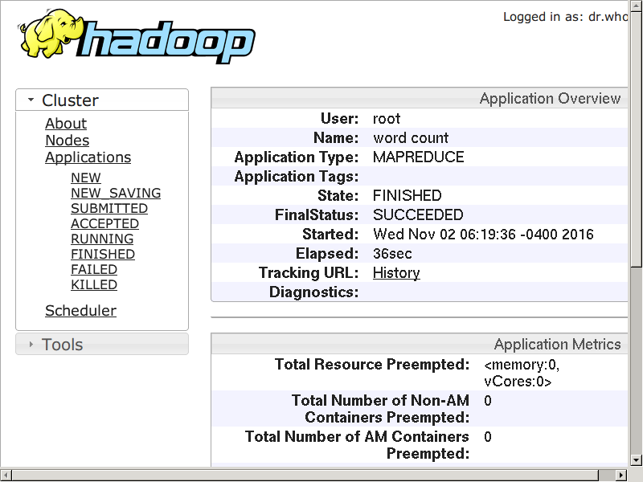
Click History link.

Click 3 link, in Maps row, Successfull column.

Go to Cloudera Manager. Then Hosts -> All Hosts.
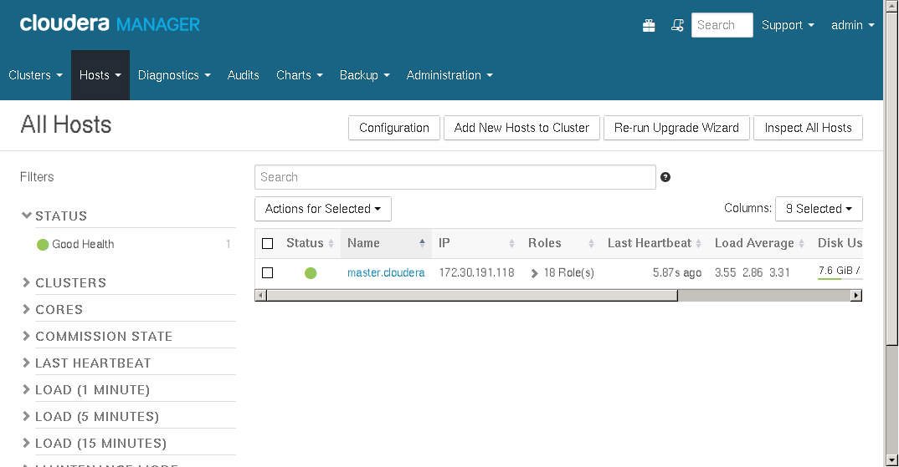
Click Add New Hosts to Cluster.
On the next screen click Continue.

Input private IP of slave instance and click Search.
Slave instance is selected. Click Continue.
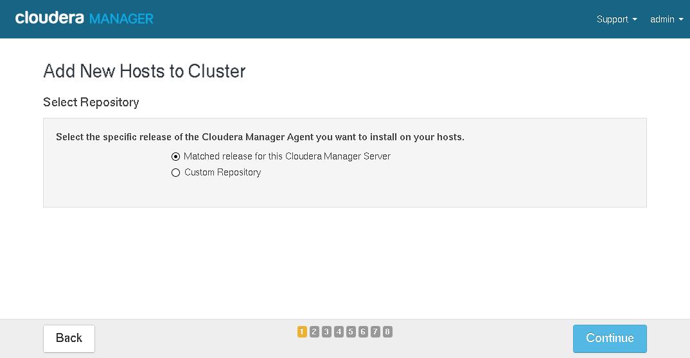
Click Continue.

Check Install Oracle Java SE Development Kit (JDK) and click Continue.
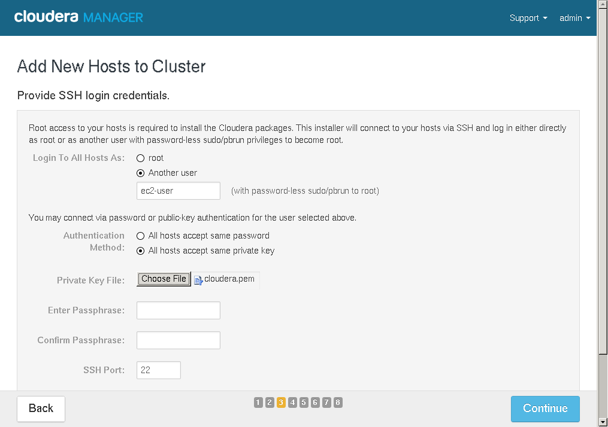
Select Another user and input ec2-user. Then select Authentication Method equals to All hosts accept same private key, click on Choose File and open cloudera.pem file. Click Continue. You will be asked: Continue SSH login with no passphrase?. Say: Ok!
Click Continue.
Coffee time again (~5m). After coffee break click Continue.
Most probably you'll see the same errors as could be seen on the screenshot:
So, in order to fix them execute the following (slave instance):
``` sudo -s
sysctl vm.swappiness=10
echo never > /sys/kernel/mm/transparent_hugepage/defrag
echo never > /sys/kernel/mm/transparent_hugepage/enabled
exit ```
Click on Run Again and see that the errors are absent. Click Continue.

Select None. And click Continue.

Click Finish.
Go to HDFS, click Actions button and select Add Role Instances.
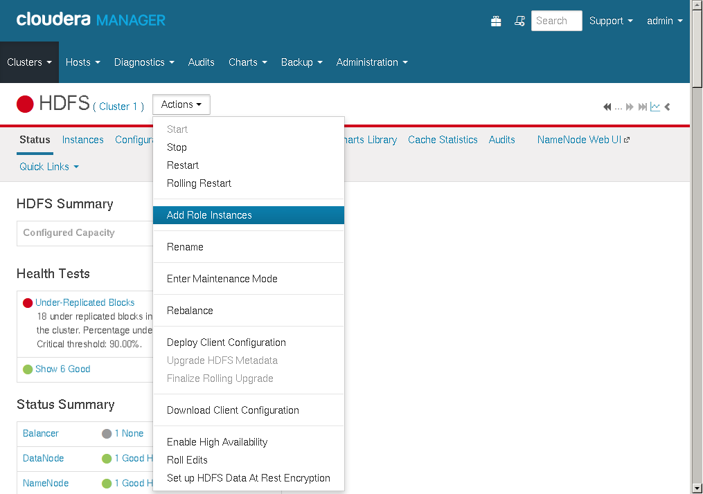
Select All Hosts for DataNode.

Click Continue and then click Finish.
On the top, near Actions button you'll see deployment icon. Click it.
On the next screen click Refresh & Deploy Client Config. And click Finish.
Go to YARN (MR2 Included), click Actions button and select Add Role Instances.
Select All Hosts for NodeManager.
Click Continue and then click Finish.
On the top, near Actions button you'll see deployment icon. Click it.
On the next screen click Deploy Client Configuration. And click Finish.
Go to Hosts -> All Hosts. Select slave.cloudera link from the list. Click Actions button and select Start Roles on Hosts.
Connect to master instance:
ssh -i cloudera.pem ec2-user@master.cloudera
Then execute the following commands:
hadoop jar wordcount-1.0-SNAPSHOT-jar-with-dependencies.jar WordCount /home/root/wordcount/input /home/root/wordcount/output2
It is mostly the same as the previous one, except that the last argument is /home/root/wordcount/output2 instead of /home/root/wordcount/output.
The following output could be seen in response:
16/11/02 07:13:55 INFO client.RMProxy: Connecting to ResourceManager at master.cloudera/172.30.191.118:8032
16/11/02 07:13:56 WARN mapreduce.JobResourceUploader: Hadoop command-line option parsing not performed. Implement the Tool interface and execute your application with ToolRunner to remedy this.
16/11/02 07:13:56 INFO input.FileInputFormat: Total input paths to process : 3
16/11/02 07:13:57 INFO mapreduce.JobSubmitter: number of splits:3
16/11/02 07:13:57 INFO mapreduce.JobSubmitter: Submitting tokens for job: job_1478081832568_0002
16/11/02 07:13:57 INFO impl.YarnClientImpl: Submitted application application_1478081832568_0002
16/11/02 07:13:57 INFO mapreduce.Job: The url to track the job: http://master.cloudera:8088/proxy/application_1478081832568_0002/
16/11/02 07:13:57 INFO mapreduce.Job: Running job: job_1478081832568_0002
16/11/02 07:14:07 INFO mapreduce.Job: Job job_1478081832568_0002 running in uber mode : false
16/11/02 07:14:07 INFO mapreduce.Job: map 0% reduce 0%
16/11/02 07:14:13 INFO mapreduce.Job: map 33% reduce 0%
16/11/02 07:14:19 INFO mapreduce.Job: map 67% reduce 0%
16/11/02 07:14:25 INFO mapreduce.Job: map 100% reduce 0%
16/11/02 07:14:34 INFO mapreduce.Job: map 100% reduce 100%
16/11/02 07:14:35 INFO mapreduce.Job: Job job_1478081832568_0002 completed successfully
16/11/02 07:14:35 INFO mapreduce.Job: Counters: 49
File System Counters
FILE: Number of bytes read=143
FILE: Number of bytes written=490060
FILE: Number of read operations=0
FILE: Number of large read operations=0
FILE: Number of write operations=0
HDFS: Number of bytes read=458
HDFS: Number of bytes written=80
HDFS: Number of read operations=12
HDFS: Number of large read operations=0
HDFS: Number of write operations=2
Job Counters
Launched map tasks=3
Launched reduce tasks=1
Data-local map tasks=3
Total time spent by all maps in occupied slots (ms)=26090
Total time spent by all reduces in occupied slots (ms)=13172
Total time spent by all map tasks (ms)=13045
Total time spent by all reduce tasks (ms)=6586
Total vcore-seconds taken by all map tasks=13045
Total vcore-seconds taken by all reduce tasks=6586
Total megabyte-seconds taken by all map tasks=13358080
Total megabyte-seconds taken by all reduce tasks=6744064
Map-Reduce Framework
Map input records=3
Map output records=18
Map output bytes=158
Map output materialized bytes=224
Input split bytes=372
Combine input records=18
Combine output records=17
Reduce input groups=12
Reduce shuffle bytes=224
Reduce input records=17
Reduce output records=12
Spilled Records=34
Shuffled Maps =3
Failed Shuffles=0
Merged Map outputs=3
GC time elapsed (ms)=222
CPU time spent (ms)=2610
Physical memory (bytes) snapshot=1553723392
Virtual memory (bytes) snapshot=6366474240
Total committed heap usage (bytes)=1410859008
Shuffle Errors
BAD_ID=0
CONNECTION=0
IO_ERROR=0
WRONG_LENGTH=0
WRONG_MAP=0
WRONG_REDUCE=0
File Input Format Counters
Bytes Read=86
File Output Format Counters
Bytes Written=80
So far so good.
Go to YARN (MR2 Included), select Applications. You can see recently executed application.
Click Web UI -> Resource Manager Web UI (master).
Click application_1478081832568_0002 application link.
Click History link.
Then click 3 link on the bottom of the page (Maps row, Successful column).
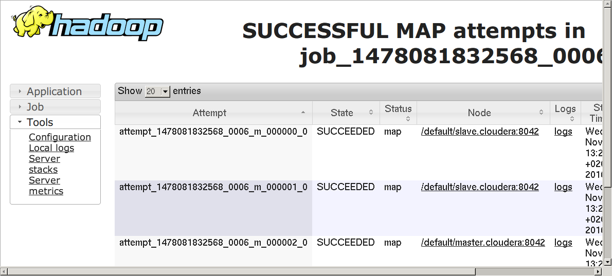
Make sure that in the column Node there are present both master and slave!
That's all!